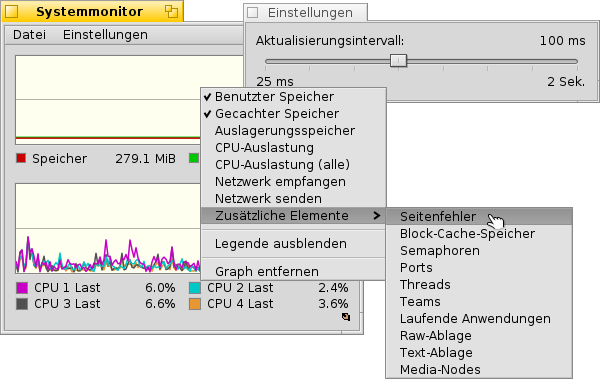

ActivityMonitor
ActivityMonitor
| Deskbar: | ||
| Ort: | /boot/system/apps/ActivityMonitor | |
| Einstellungen: | ~/config/settings/ActivityMonitor settings |
Um die Systemressourcen im Auge zu behalten, kann der ActivityMonitor gestartet werden, um sich die für einen interessanten Information anzeigen zu lassen.
Mit einen Rechtsklick ins Fenster kann die Anzeige verschiedener Ressourcen ein- und ausgeschaltet werden:
Benutzter/Gecacheter Speicher, Auslagerungsspeicher, CPU-Auslastung, Netzwerk empfangen/senden, Seitenfehler, Semaphoren, Ports, Threads, Teams, Laufende Anwendungen, Raw-/Text-Ablage, Media-Nodes.
Unter der Anzeige befindet sich eine Legende, die über das Kontextmenü auch ausgeschaltet werden kann. Farben der Legende und auch der Anzeigehintergrund können mittels Drag&Drop von jedem Farbauswahl-Tool aus, z.B. von Icon-O-Matic, geändert werden.
Mittels lassen sich noch weitere Anzeigeflächen dazuschalten, falls es zu unübersichtlich wird.
Das Menü öffnet ein Fenster, in dem das Aktualisierungsintervall der Anzeige eingestellt werden kann.
Jede Anzeige hat ihre eigenes kleines Replikanten Symbol und kann so z.B. auf den Desktop gezogen werden.